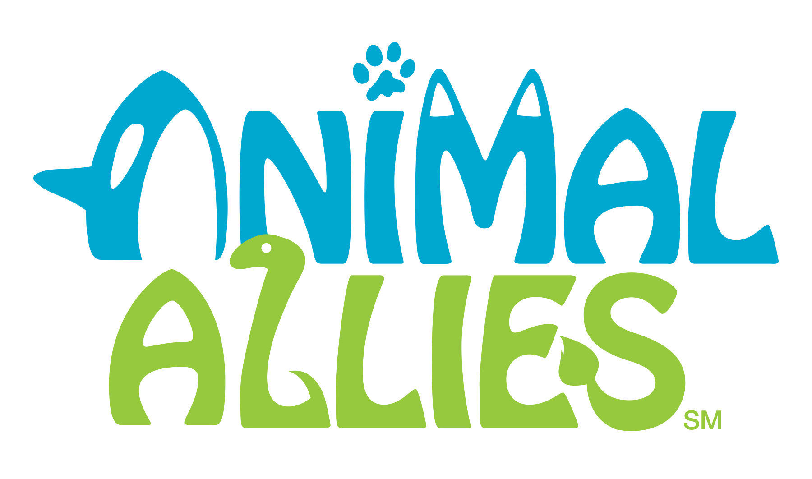
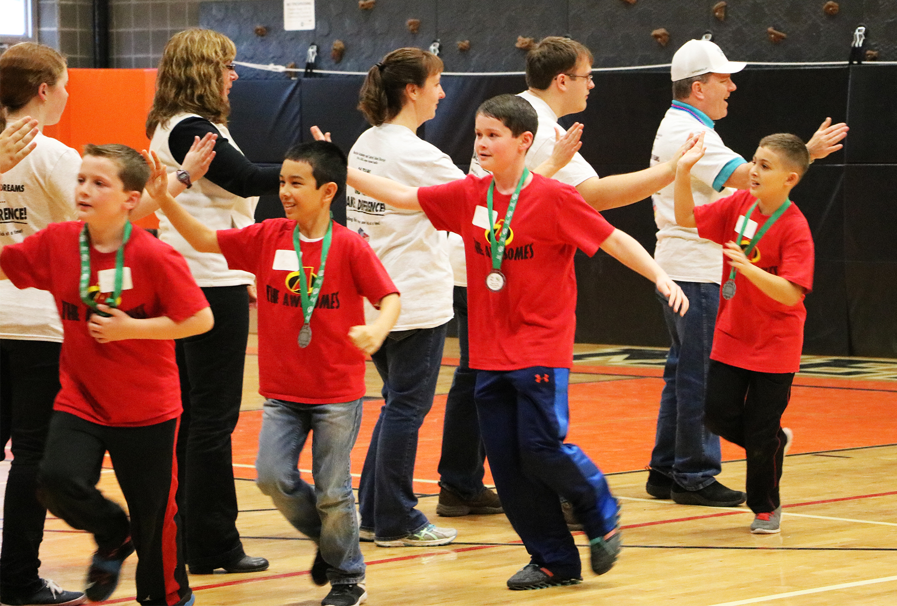

2016 Liberty FLL Qualifier

Judge's Briefing
Priorities
- Make sure the kids have a great time
- Ensure that every team is judged fairly
- Always stay on schedule!
Conflicts of Interest
- Coach of a competing team
- Family member of a competing team
- Recuse yourself from discussion relating to that team
- We only consider information from the current tournament
Schedule Overview
- 7:30 - Judge Briefing
- 8:00 - Area Briefing
- 8:30 - Calibration Team
- 9:00 - Judging Rounds Begin
- 12:15 - Judging Ends
- 12:30 - Lunch Deliberations
- 1:30 - Area Deliberations
- 2:30 - Final Deliberations
- 3:30 - Award Scripts
- 4:30 - Award Ceremony
Morning Judging Sessions
(9:00 - 12:15)
- Form judging teams of 2
- 5 minute presentation
- 5 minute Q&A session
- 5 minutes to fill out rubrics
- Take notes on your pads, keep throughout the day
- Tip! Keep your rubrics in rank order during the morning
Core Values Concerns
- Always give benefit of the doubt
- If serious, notify your judge lead ASAP
- Serious potential violations have to be investigated
- May affect deliberations and awards
-
Verified, serious violations may result in DQ from awards
This is EXTREMELY rare
Lunchtime Deliberations
(12:30 - 1:30)
- Have lunch with your judging partner
- Rank all of your teams in order
- Finalize rubric feedback
-
Space is limited in the volunteer lounge
Recommend you take your lunch back to your room
- Result: Rank order of all teams you judged
Area Deliberations
(1:30 - 2:30)
- Meet with all judges in your area
- Deliberations lead by area judge lead
- Result: Top 10 teams in your area
Final Deliberations
(2:30 - 3:30)
- All judges meet back here
- Decide who wins which award
- Result: All awards assigned
Judging Awards
- Champion's Award (First, Second)
- Core Values Award (First - Third)
- Project Award (First - Third)
- Robot Design Award (First - Third)
- Judge's Award
- Outstanding Coach/Youth Mentor
- Outstanding Volunteer
Advancement to State Championship
- Eight teams will advance
- Criteria is same as Champion's Award
- Must want to advance
- Must participate in all three judged areas
-
Must be in top 48% in Robot Performance
(basically in the top 15)
Award Scripts
(3:30 - 4:15)
- Written by judge who saw the team
- Simple forms to fill out
- Read by judge who saw the team
- Need 2 volunteers to fill out Golden Tickets
Awards Ceremony
(4:30 - 5:15)
